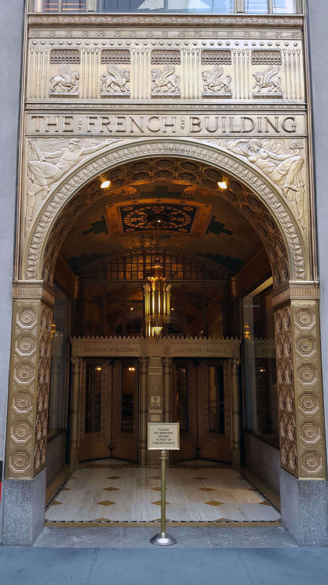

Zachary Swidler Centennial

Zachary Swidler, ca. 1951
Happy 100th Birthday Zack.
May 4, 2017 is the 100th Anniversary of Zack Swidler's birth. To mark the occasion, we created this website.
It serves to honor Zack, to share and preserve memories, and to tell him again that we love and miss him.
Zack died in 1990, before the internet. But he would have enjoyed this.

Biography
Russia and Turkey

Sonia, Marsha, Zack and Samuel Swidler, ca. 1926
Zachary Swidler was born on May 4, 1917 in Yevpetoria, a small port town in Russia's Crimean Peninsula. The first Russian Revolution had just occurred in March; the Bolshevik Revolution and Civil War would start in October.
Zack's parents, Samuel (originally Ifsiah) and Sonia Swidler were Jews who spoke Yiddish, not Russian. Sam, a tailor, was the youngest of three orphan brothers who grew up in Little Tokmak in eastern Ukraine, then part of Russia. His older brothers were Lova and Elousha.
In 1921, to escape the Russian Civil War, poverty and pogroms, the Swidler brothers and their families, including Sonia and 4-year old Zack evaded guards to take a small boat across the Black Sea to Constantinople (Istanbul), Turkey.
There is a vivid description of the harrowing struggles and adventures of the Swidler brothers and their families, primarily Elousha's family, in a book called Quiberon: And a Life is Changed Forever by Madeleine Scott Swidler, Elousha's daughter. (2017).
During their year in Turkey, Sam and Sonia had another child, Marsha.
Coming to America

1922 Ellis Island Manifest
In 1922 the Swidlers came to America as steerage passengers on the S.S. Canada. Sailing past the Statue of Liberty, they arrived in New York City on December 12, 1922. They were processed at Ellis Island and permitted to enter (the manifest lists them as Govsek, Sarah, Zahari and Marie Svidler). The Swidlers moved into an apartment in the Washington Heights area of Manhattan, on Ft. Washington Ave.
As for Sam's brothers and their families: Lova decided to stay in Constantinople (although years later his children emigrated to New York). Elousha delayed emigrating for a year, but by then the U.S. passed the harshly restrictive Immigration Act of 1924. Instead, Elousha's family emigrated to Paris. That placed them at grave risk years later during the Holocaust, as described in Quiberon. Eventually that Swidler family escaped to Casablanca and then to New York, where they reconnected with Sam and Sonia.
Early Years

Zack and sister Marsha, ca. 1934
While Samuel worked as a tailor and Sonia as a homemaker, the children went to public school.
Zack went to George Washington High School. He was a strong swimmer, was on the school swim team and was a lifeguard in the summer. According to family lore, he once raced against Johnny Weissmuller, the Olympic swimmer who played Tarzan in films (presumably Weissmuller won).
Zack also took piano lessons at home, gaining both a remarkable proficiency and a lifetime love of music.
After high school, Zack went to City College of NY (CCNY) where, about 1937, he received his degree in accounting. He then worked for several years for Primoff & Co., a small accounting firm.
The War Years

Zack Swidler in the Army, 1944
When WWII broke out, Zack was drafted into the Army and posted at Governor's Island in NY Harbor. He joked that his family and friends held a "Going Overseas" party for him before he shipped (ferried?) out.
Among his other assignments, Corporal Swidler was an MP (Military Police), and guarded German prisoners on train trips to POW camps in the Southwest.

Zack Swidler in the Army, 1943
Bea

Bea and Zack, ca. 1946
During the war, Zack met his future wife Bea at the USO in NYC. The story told is that he proposed on their first date, and she thought he was odd. But they started dating, and married in 1947.
They got a one bedroom apartment at 540 East 20th Street in Stuyvesant Town, a large housing project built for returning veterans.
Kids

Zack with the three boys, 1957
Bea and Zack had three boys in the span of four years: Steven (b. 1951), Sandy (b. 1953) and Robert (b. 1954).
During this time, the Swidlers moved into a 2 bedroom apartment — Apt. 1-C — in the same building. The three kids would share the same small bedroom for 12 years.

Zack with his parents and his kids, 1959
Zack was a wonderful Dad.
Early Career — 1950–75
Zachary Swidler, ca. 1951
With Bea's encouragement (i.e. insistence) Zack applied to law school, which would be paid for by the GI Bill (thank you FDR!). With his accounting day job and three kids, he went to New York Law School at night for four years.
After graduating, Zack set up an accounting and law practice at 11 West 42nd St. (across from the NY Public Library). While there he formed a partnership with three other young lawyers, but two of them ran into serious legal troubles and the partnership dissolved. Zack emigrated to 10 West 40th St. (across from Bryant Park) where he partnered with Jack Schlossberg and Paul Sage in an accounting practice.
No partnership with Zack, except his marital partnership, was a long term affair, so after a few marginally productive years, Zack moved down the block to 21 East 40th St. and partnered with Jack Siegal, Irving Port and Herbert Posner. Posner was a NYS Assemblyman from Far Rockaway and ultimately left the practice after a few years to become a Supreme Court Justice in Queens.
Zack provided legal, accounting and tax advice to a wide range of small businesses, including a printer, a screw manufacturer on Spring Street, a stationary store, a jeweler, a manufacturer of artist colors, and a real estate investor. His clients valued his advice and became his close friends. His business grew.
Early Family Life — 1960–75

Bea and Zack, New Years in Florida, 1964
Zack's long hours at work kept him away from his wife and family a lot. But he loved them dearly, and when he was home he was always kind, interesting, and funny. He gave jewelry and other gifts to Bea often, for no special occasion.
When the kids were in cub scouts, Zack was a den leader and formed a cub scout band. In 1962, after astronaut John Glenn returned from orbiting the Earth, Zack's cub scout band, including his three kids, performed at the Waldorf Astoria luncheon for Glenn, Vice President Lyndon Johnson, and many other celebrity guests.

Zack leading a cub scout band at a Waldorf Hotel luncheon for Col. John Glenn a few days after he orbited the earth.
Bea and Zack were close to their families (parents, brothers and sisters, cousins, nieces and nephews), and they got together often. They also had a close circle of friends, notably Bernie and Bea Sumliner, who also lived in Stuyvesant Town.
In the summer, Bea and the kids would go to a bungalow colony near Middletown (1953–1962). Later they bought a summer home in Kauneonga Lake NY — three miles down the road from where the Woodstock festival would be in 1969. Zack would work in the city on weekdays and come up on weekends. His family was delighted when he arrived.

Zack with 3 kids on beach, burying Sandy
In 1967 the family moved into a slightly larger (3 bedroom) apartment — 8 Stuyvesant Oval Apt. 4-B.
Later Career — 1975–90

The French Building, 551 Fifth Avenue
In 1975, Zack moved to the elegant French Building at 551 Fifth Avenue (between 46th and 47th St.), where he remarried his former partners, Sage and Schlossberg and added a new one — Stanley Ross. This time they formed a law partnership as well as an accounting partnership.
Zack's son, Steven, graduated law school (1976) and was a ski bum out West in Colorado awaiting the bar exam results. After he passed (on the first try) Zack cajoled Steven to "help him out for a few weeks and then go back to being a ski bum." Steven came, got a big case from one of his friends, stayed, made a lot of money for the firm, and convinced Zack to leave the security of his long time partners to go into business as a father and son team. Swidler & Swidler, PC was born around 1979–1980 and in 1981 they moved to 41 E. 42nd St., along with Zack's ever present cream-colored Hardman piano.
Steven learned how to practice law, not from Zack, but by trial and error (mostly error). Zack focused on organizing shopping center and other high-risk tax sheltered investments. Some hit, some failed, but there was always substantial drama with manic highs and lows.
The father-son team moved to 270 Madison Avenue in 1989 (again with Zack's piano). In March 1990, the Zack part of the Swidler & Swidler story ended.
Later Family Life — 1975–90

Zack with sons at Sandy's wedding, 1977
Content to be added.

Bea and Zack holding grandson Eric, 1990
Zack and Music

Zack playing accordion, 1986
Zack loved to play the piano and the accordion. He was exceptionally talented and accomplished. For example he could play Chopin's Fantasie Impromptu, which has a mind twisting cross-rhythm: 16th notes in the right hand and triplets in the left.
He loved Chopin, Strauss waltzes, Schumann and other romantic composers. He also loved to play kitschy Broadway show tunes and Jewish klezmer-sounding favorites. Zack impressed and entertained his family and many guests.
Zack's Personality & Values

Bea and Zack, 1982
Content to be added.
Zack's Legacy
Content to be added.
Photos
Early Life & Family
The War Years & Marriage

Family Life
Later Years
Video / Audio

1988 — Strauss waltz performed by Zack (piano and accordion) and son Robert (guitar and mandolin)
Documents
This page contains historical documents related to Zack and his family — immigration records, official papers, and other primary source materials.
- 📋 1922 Ellis Island Manifest — S.S. Canada passenger record for the Svidler family
- 📋 Additional documents to be added
Stories & Memories
Family Tree
Parents
- Samuel Swidler (father) — tailor, immigrated from Russia
- Sonia Swidler (mother) — immigrated from Russia
Zachary's Generation
- Zachary (Zack) Swidler — b. May 4, 1917, Yevpetoria, Russia · d. March 30, 1990
- Marsha Swidler (sister) — b. Constantinople, Turkey, ca. 1921–22
Zack & Bea's Family
- Beatrice (Bea) Swidler — married Zack in 1947
- Steven Swidler — b. 1951
- Sandy Swidler — b. 1953 (married 1977)
- Robert Swidler — b. 1954
Additional Family
Extended family details to be added.